exemple_net_combat.jpg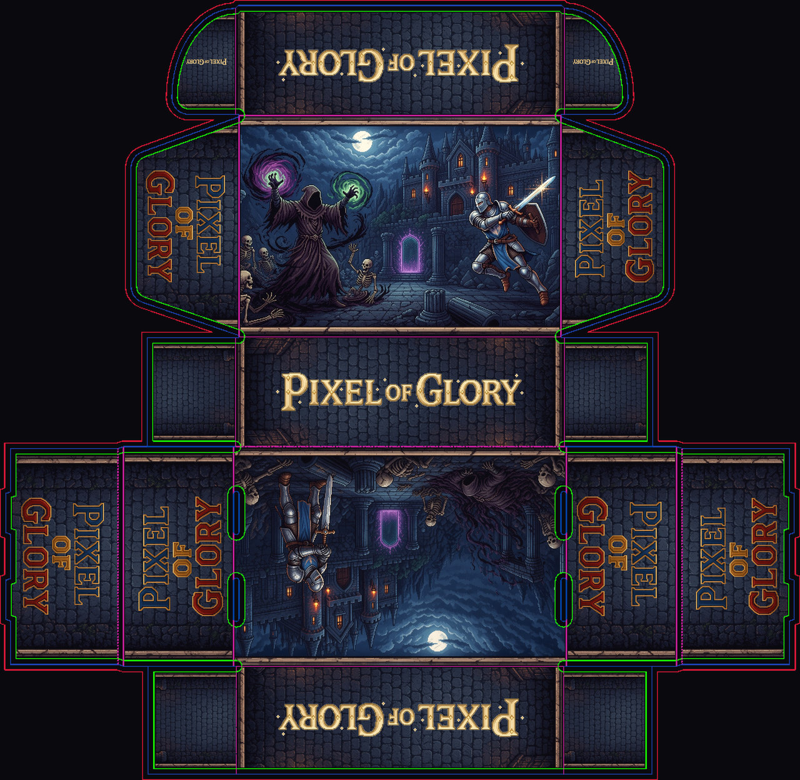
exemple_net_pierre.jpgOrientations corrigées (A, C, E, F, H à 180°). Filet un peu éclairci. Les petites zones noires à gauche et à droite de D et H sont des rabats du carton : elles sont maintenant remplies de pierre, sans logo.
Plus de personnages coupés sur les bandes. Deux propositions : moments du combat (A = l’incantation, D = le choc, H = après le coup) ou pierre + logo comme l’ancien H.
exemple_net_combat.jpg
exemple_net_pierre.jpg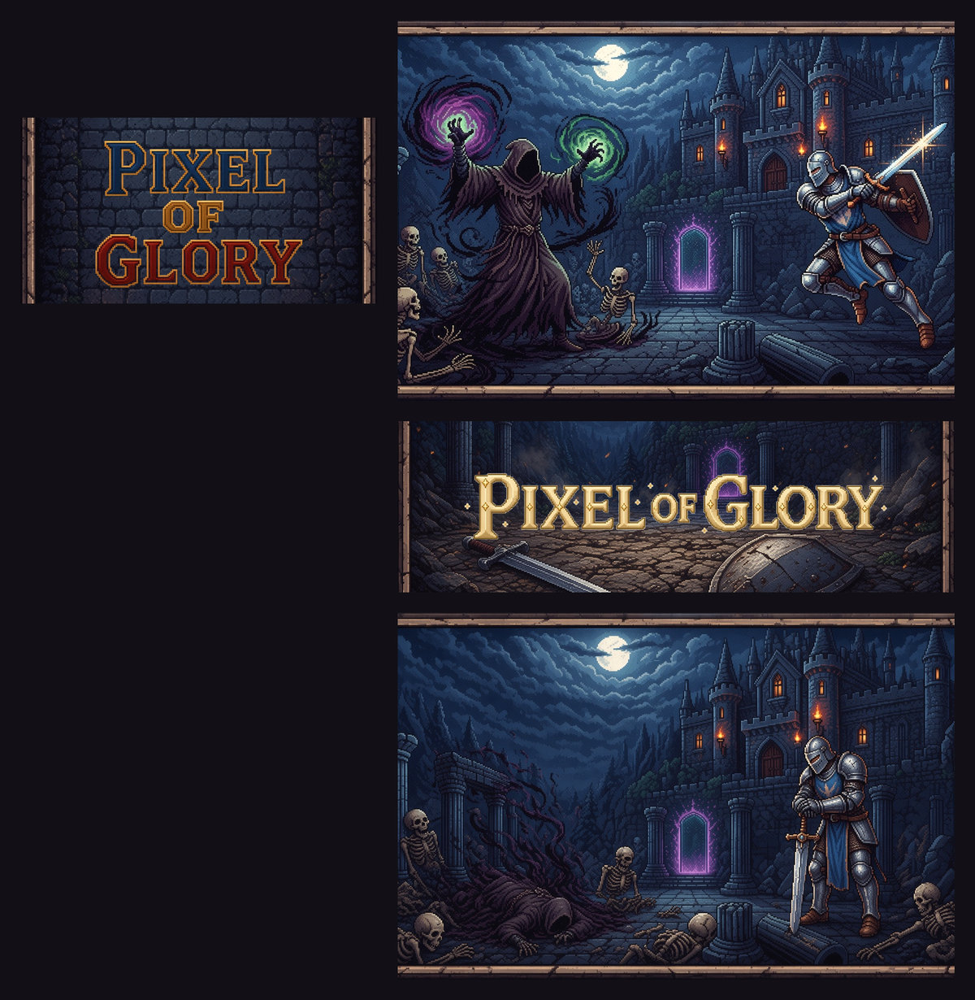
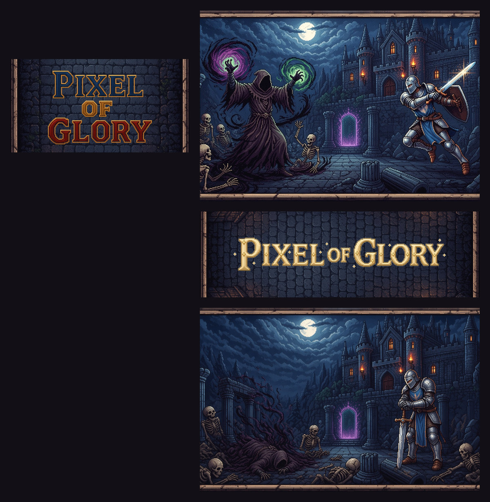
Toutes sont tournées de 180° sur le filet. Ici, à l’endroit.
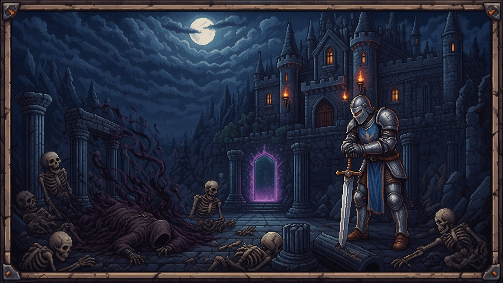
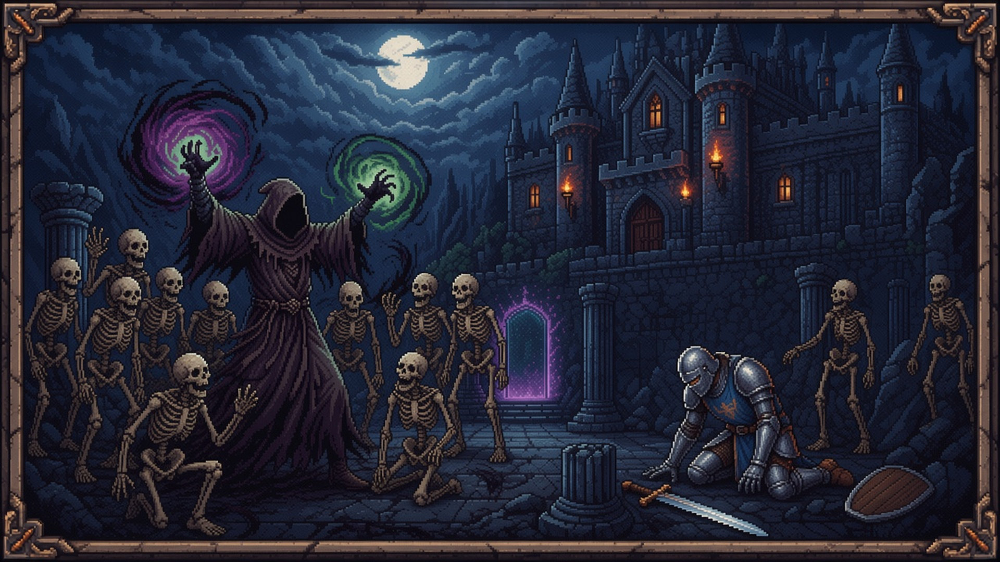
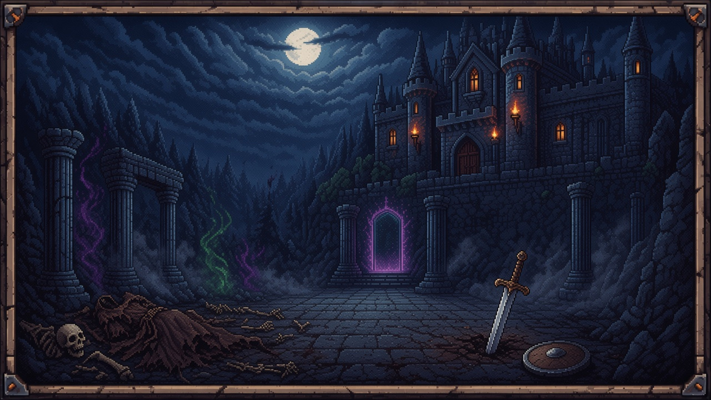
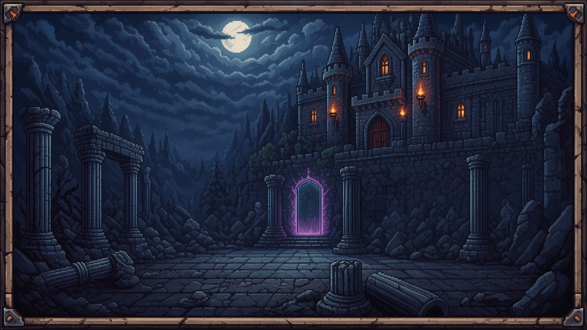
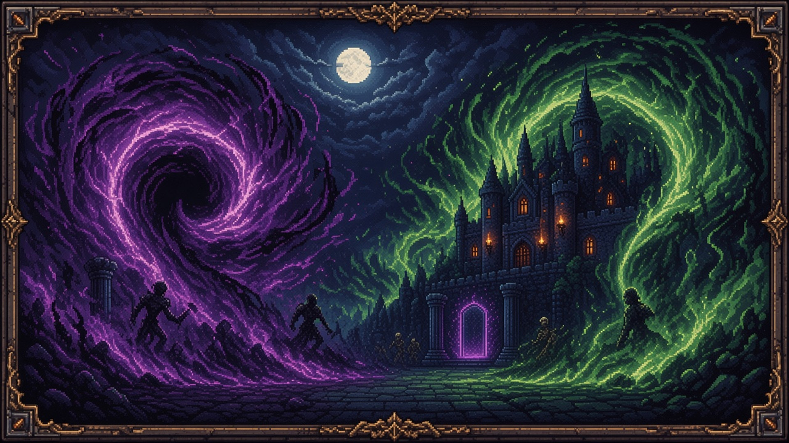
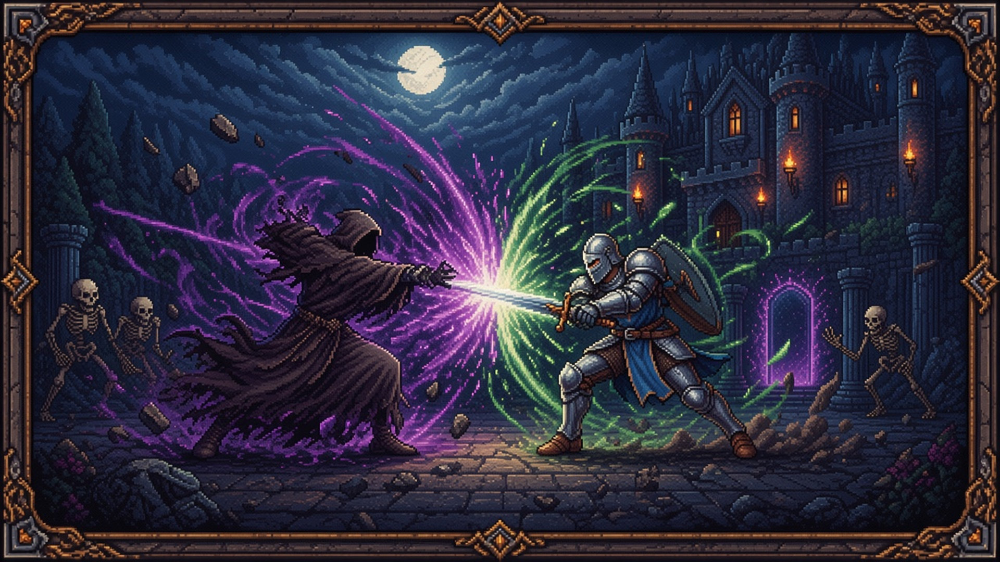
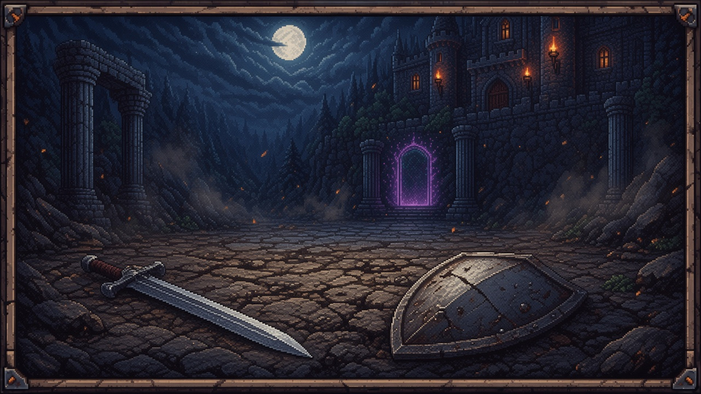
Calques séparés : sources/paysage_01.jpg … 05.jpg
et sources/parchemin.png (fond transparent).
Recadrage 70×35 cm dans sources/print_70x35/.
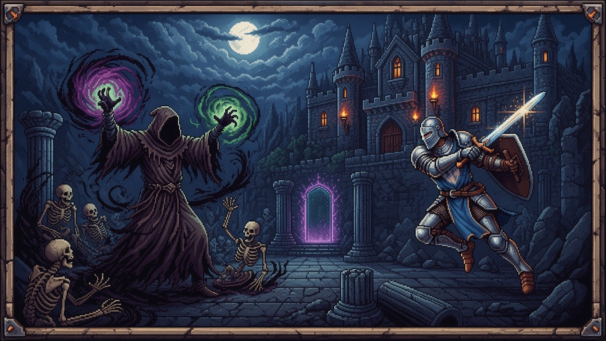
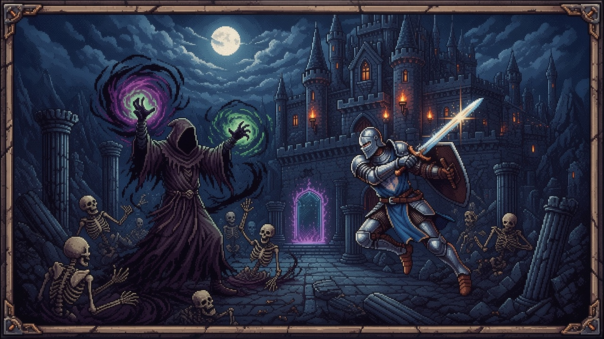
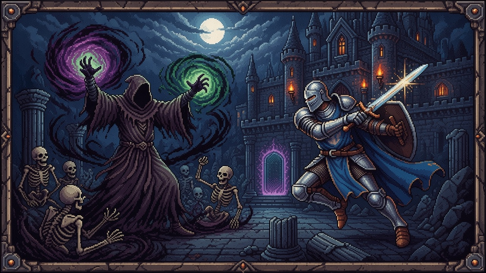
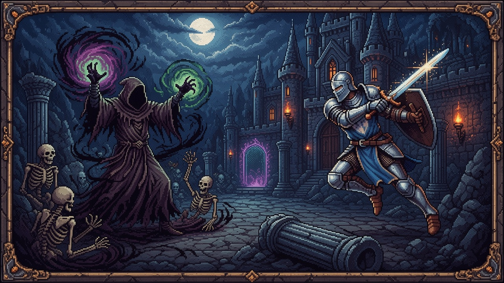
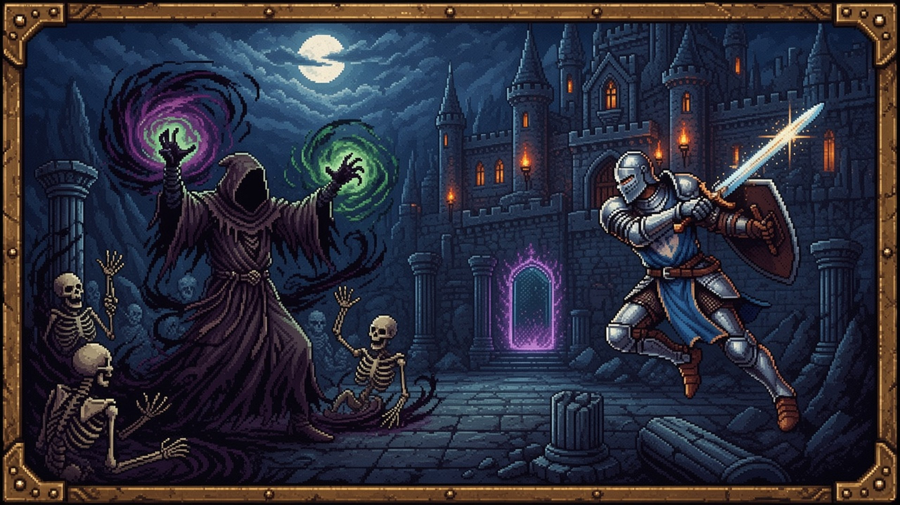
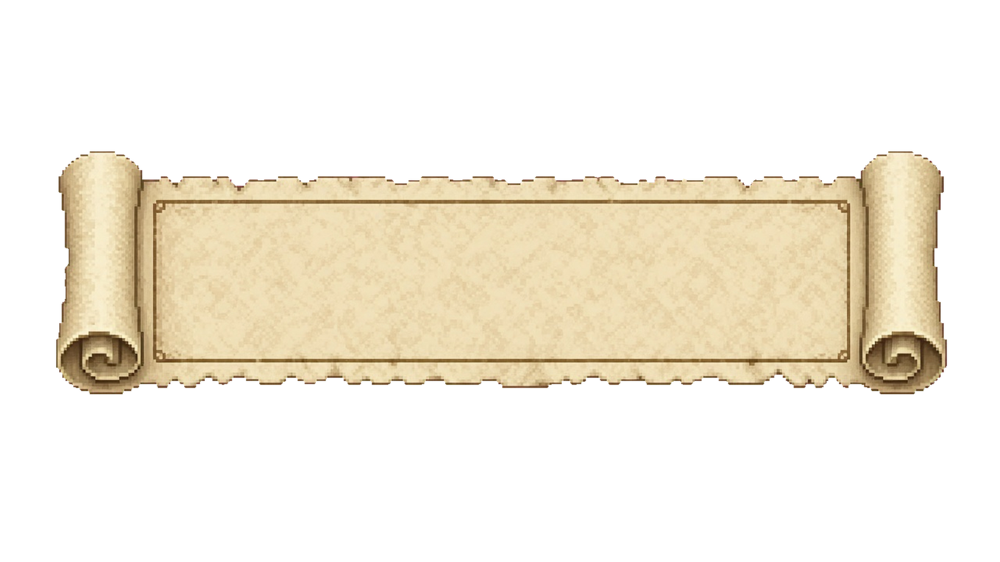